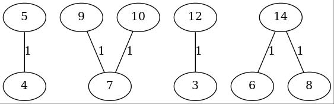
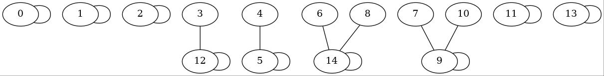
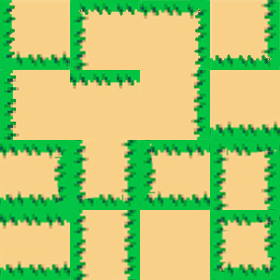
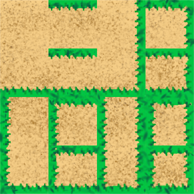

Pour la suite on cherche les composantes conexes à partir d'une liste des arêtes
CODE INIT LIST
Ce qui donne avec graphviz :

Pour la suit on utilise les partions sur chaque case de la liste, on fusion simplement les partions des differents noeuds:

Pour la suite on recupere une grille genere avec l'algorithme de Kruskal, elle contient des nombres entre 0 et 15.
Pour cela on a cree un Asset de mur :

une fois cette Asset cree on c'est rendu compte d'un probleme :
